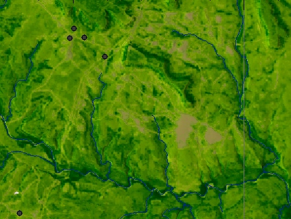
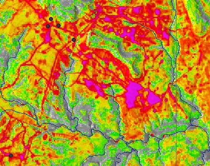
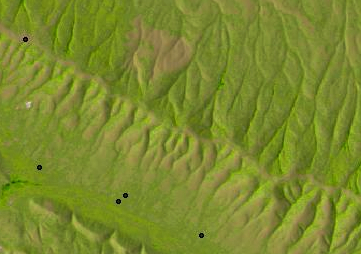
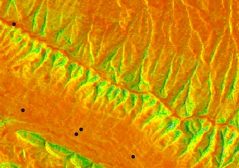

Steve Warren, Matt Hohmann, Tom, Ruzicki, Helena Mitasova
DRAFT - UNDER DEVELOPMENT, finalize regressions using landsat8, add photos to help assign C-factorUniversal Soil Loss Equation C-factor tables
Fort Campbell:
Forested areas: C=0.001 (Wischmeier and Smith, Table 11), OR 0.003 (Dissmeyer and Foster, Table 3) x 0.5 (Dissmeyer and Foster, Table 5) = 0.0015 Meadows: C=0.013 (Wischmeier and Smith, Table 10) Ag fields: regress imagery with field-determined C-factors C-factors
Yakima:
All areas: regress field-determined C-factors multiplied by 0.1
Fort Hood:
Forested areas (as determined by imagery): C=0.002 (Dissmeyer and Foster Table 3 x Table 5) All non-wooded areas: regress imagery with field determined C-factors multiplied by 0.1
Schofield Barracks:
All forested areas: C=0.0001 All non-forested areas: regress imagery with field based C-factors multiplied by 0.1
Eglin AFB:
Forested areas: see if it is possible to differentiate levels of forest canopy using imagery Non-forested areas: see Ft. Hood
   